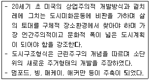
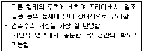
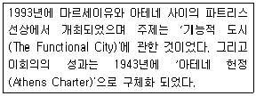
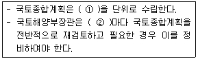
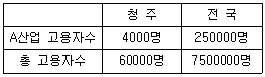
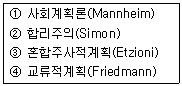
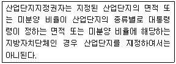
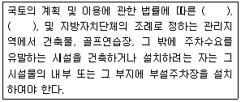

도시계획기사 (2010-09-05 기출문제)
1과목: 도시계획론
1. 다음 중 획지에 부여된 용적률과 실제 이용되고 있는 용적률과의 차이를 다른 부지에 이전할 수 있는 제도는?
- 계획단위개발제도(PUD)
- 공중권제도(Air Rights)
- 개발권이전제도(TDR)
- 혼합용도개발제도(MXD)
(정답률: 알수없음)

2. 다음 중 도시조사의 목적으로 옳지 않은 것은?
- 도시의 위치와 역할에 대한 이해
- 도시 당면과제의 인식과 해결방안 모색
- 조사 자료의 한시적 활용
- 장래 시가화 동향 예측
(정답률: 알수없음)
3. 다음 중 지속가능한 도시가 추구하는 목표가 아닌 것은?
- 환경 친화적 교통·물류체계정비
- 쾌적한 도시공간의 정비·확보
- 현재의 건축물을 파손하지 않고 계속적으로 보존
- 환경부하의 저감, 자연과의 공생, 어메니티 창출
(정답률: 알수없음)
4. 다음 도시장래인구 추정방법 중 등비급수법에 해당하는 것은?(단, Pn : n년 후의 추정인구, Po : 현재인구, n : 경과년수, r : 인구증가율, a · b :상수, k : 상한인구수)
- Pn = Po(1+r)
- Pn = Po(1+rn)
- Pn = Po · ern
- Pn = k / 1+ern a+bn
(정답률: 알수없음)
5. 다음 중 토지이용에서 도시문제를 야기하는 대표적인 요인으로 보기 어려운 것은?
- 이용주체간의 경합
- 외부효과
- 토지의 난개발
- 계획성 있는 토지이용계획
(정답률: 알수없음)
6. 다음 중 도시계획시설에 대한 설명으로 옳지 않은 것은?
- 도시계획시설은 시민의 공동생활과 도시의 경제·사회활동을 원활하게 지원하기 위한 시설이다.
- 도시계획시설은 도시 전체의 발전과 여타 시설과의 기능적 조화를 도모하기 위한 기반시설이다.
- 도시계획시설은 기반시설의 공공성 확보를 위해 정부가 직접 설치하여 민간은 참여하지 못한다.
- 도시계획시설은 도시관리계획으로 결정한다.
(정답률: 알수없음)
7. 다음 중 21시게 새로운 도시계획의 흐름에 대한 설명으로 옳지 않은 것은?
- U-City는 유비쿼터스 컴퓨팅, 정보통신 기술을 기반으로 도시 전반의 영역을 융합하여 통합되고 지능적이며, 스스로 혁신되는 도시로 정의할 수 있다.
- 도시재생이란 대도시 도심지역에서의 인구 및 산업의 회귀를 촉진하고 재활성화를 모색하기 위한 최근의 계획경향이다.
- 친환경 생태도시(Eco-City)는 환경적 자연자원 조건·사회경제적 요소와 공동체적인 요소까지 고려한 다양한 측면에서의 지속가능한 도시조성의 개념이다.
- 압축도시(Compact City)는 토지이용의 분산과 도시의 엄격한 기능분리를 통해 기존 도심의 과밀 등 도시문제를 해결하기 위한 새로운 미래도시 개념이다.
(정답률: 알수없음)
8. 다음 중 도시계획의 필요성과 관련이 적은 것은?
- 각종 도시기능들 간에 발생되는 토지이용 경합에 효율적으로 대처한다.
- 도시의 각종 개별적 물리적 시설 구축계획을 도시 전체의 입장에서 정리한다.
- 지역 사회의 사회적·경제적인 측면을 물리적 시설과 적절히 연계한다.
- 도시를 가능하면 기하학적인 형태로 조성하면서 규칙적이고 통일성 잇는 거리조성을 주요과제로 한다.
(정답률: 알수없음)
9. 다음 중 각 층의 바닥 면적이 500m2이고 용적률이 200%인 20층 건축물의 대지면적은 얼마인가?
- 1300m2
- 2000m2
- 5000m2
- 6500m2
(정답률: 알수없음)
10. 계획이론을 실체적 이론(substantive theories)과 절차적이론(procedural theories)으로 구분할 때, 다음 중 절차적 이론에 대한 설명으로 옳지 않은 것은?
- 보다 효율적이고 합리적인 계획을 수립하고 실행하기 위한 계획의 과정에 관한 이론이다.
- 경제 또는 사회의 구조나 현상 등을 설명하고 예측하여 문제의 해결 대안을 제시하는 이론이다.
- 계획의 대상이 되는 현상에 대한 이해보다는 계획 그 자체가 어떻게 작용하는가에 관한 이론이다.
- 계획이 추구하는 목표와 가치에 따라 계획안을 만들어 내는 과정에 관한 공통적이고 일반적인 이론이다.
(정답률: 알수없음)
11. 다음 중 도시의 특성으로 옳지 않은 것은?
- 높은 인구밀도
- 동질성이 높은 사회
- 익명성의 증가
- 기능의 집적과 분화
(정답률: 알수없음)
12. 다음 중 토지이용계획을 실현하기 위하여 강제적 수단을 통한 용도지역의 규제내용이 아닌 것은?
- 용도의 규제
- 건폐율의 규제
- 건축물의 소유권 제한
- 건축물의 높이 제한
(정답률: 알수없음)
13. 다음 중 초기의 용도지역제인 유클리드 지역제(Euclidean zoning)에 대한 설명으로 옳지 않은 것은?
- 상위용도(주거 등)를 하위용도(공장 등)로부터 보호하면 충분하다는 전제 하에 누적식 지역제를 채택하였다
- 실제의 토지이용에 근거하여 발생하는 각종 결과를 기준하는 규제하는 성과규제지역제이다.
- 과도한 민간개발을 막기 위하여 개발촉진 보다는 억제에 더 관심을 두었다.
- 토지이용의 규제단위를 각각의 필지로 하여 이를 통해 양호한 시자기를 형성하고자 하였다.
(정답률: 알수없음)
14. 다음 중 인구예측방법의 적용에 대한 설명으로 옳지 않은 것은?
- 등차급수에 의한 방법은 인구증가율이 안정된 도시에 적합하다.
- 곰페르츠모형은 연구대상 도시에 거주할 것으로 예상되는 최대포화인구를 가정 하여야 한다.
- 로지스틱모형은 인구성장의 상한치나 성장의 물리적 한계가 있는 도시에 적용이 가능하다.
- 신규공업단지의 건설 혹은 대규모 시설의 유치로 취업인구에 대한 예측이 가능할 경우에는 비교유추에 의한 방법이 타당하다.
(정답률: 알수없음)
15. 다음 중 도시 중심부에 도심광장인 아고라를 배치하여 시민들의 교역, 사교, 집화장으로 활용한 시대의 도시는?
- 고대 그리스 도시
- 중세 중국 도시
- 중세 유럽 도시
- 고대 메소포타미아 도시
(정답률: 알수없음)
16. 다음 중 국토계획의 개념에 대한 설명이 옳지 않은 것은?
- 전 국토를 대상으로 국토를 균형 있게 발전시키고 국민의 삶의 질을 개선시키고자 하는 공간계획이다.
- 각 지방정부가 계획수립의 주체가 되는 계획이다.
- 국토의 공간구성과 관련 있는 모든 분야가 망라되는 종합계획이다.
- 하위계획과 구체적인 집행계획에 지침을 제시하는 지침제시적 계획이다.
(정답률: 알수없음)
17. 다음 중 제1종 지구단위계획은 향후 얼마의 기간 내외에 걸쳐 나타날 여건변화와 주변지역의 미래모습을 상정하여 수립하는 계획인가?
- 3년
- 5년
- 10년
- 20년
(정답률: 50%)
18. 다음 중 경관의 유형 구분이 옳지 않은 것은?
- 경관자원의 특성에 따라 크게 자연경관, 인공경관으로 구분할 수 있다.
- 경관자원의 형태에 따라 점적인 형태, 선적인 형태, 면적인 형태로 구분할 수 있다.
- 경관의 대상 범위에 따라 광역적 경관, 도시적 경관, 시가지 경관, 지구적 경관으로 분류할 수 있다.
- 경관의 현상에 따라 부감경, 양감경, 수평경으로 분류 할 수 있다.
(정답률: 40%)
19. 다음 중 아래의 특징에 해당하는 것은?(오류 신고가 접수된 문제입니다. 반드시 정답과 해설을 확인하시기 바랍니다.)

- 미국지역계획가협회
- 세계건축가협회
- 르네상스운동
- 에키스틱스운동
(정답률: 알수없음)
20. 다음 중 미래사회 변화에 대비한 새로운 계획패러다임의 방향으로 보기 어려운 것은
- 자원 및 에너지 절약형 도시개발로의 전환
- 도·농 분리적 계획으로 생태 환경 보존
- 시민참여 확대와 개발주체의 다양화
- 입체적·기능 통합적 토지이용관리
(정답률: 알수없음)
2과목: 도시설계 및 단지계획
21. 다음 중 생활권의 위계를 구성단위의 크기가 큰 것부터 순서대로 옳게 나열한 것은?
- 인보구 ＞ 근린주구 ＞ 근린분구
- 근린주구 ＞ 인보구 ＞ 근린분구
- 근린분구 ＞ 근린주구 ＞ 인보구
- 근린주구 ＞ 근린분구 ＞ 인보구
(정답률: 알수없음)
22. 다음 중 경관분석의 기법에 해당하지 않은 것은?
- 기호화 방법
- 메시(mesh)에 의한 방법
- 게슈탈트(Gestalt)에 의한 방법
- 군락측도 방법
(정답률: 알수없음)
23. 상업시설용지의 배치유형을 집중형과 노선형으로 구분할 때, 다음 중 노선형에 대한 설명으로 옳지 않은 것은?
- 자동차 위주의 접근을 유도한다.
- 단일 목적의 활동이 일어나는 것이 기대될 때 적용한다.
- 도시미관이 손상될 우려가 있다.
- 도로와 거주지 사이의 소음을 완충하는 역할을 한다.
(정답률: 알수없음)
24. 전용주거지역 또는 일반주거지역에 건축하는 건축물의 높이 8m 를 초과하는 부분에 대하여, 정북 방향으로의 인접 대지 경계선으로부터 해당 건축물 각 부분 높이의 얼마 이상을 띄어 건축하여야 하는 가?
- 1/2 이상
- 1배 이상
- 2배 이상
- 3배 이상
(정답률: 알수없음)
25. 등고선 간격이 2m이고, 경사도가 4%일 때 수평거리는 얼마인가?
- 20m
- 200m
- 5m
- 50m
(정답률: 알수없음)
26. 다음 중 케빈린치(Kevin Lynch)가 분류한 도시 이미지의 5가지 요소를 모두 옳게 나열한 것은?
- 도로(Path), 건축물(building), 광장(plaza), 공원(park), 지구(district)
- 공장지대(factory), 중심지구(CBD), 지구(district) 도로(path), 광장(plaza)
- 경계(edge), 랜드마크(landmark), 결절점(node), 도로(path), 지구(district)
- 경계(edge), 하천(river), 랜드마크(landmark), 결절점(node), 중심지구(CBD)
(정답률: 알수없음)
27. 공동주택건립을 위한 지구단위계획의 작성에서 다음 중 친환경 계획요소에 속하지 않은 것은?
- 비오톱 좋성
- 투수성 바닥처리
- 자원 재활용
- 조망권 확보
(정답률: 알수없음)
28. 다음 중 주거단지 내 통과 교통을 배제할 수 있지만 우회도로가 없는 결점을 개량하여 만든 것으로 도로율이 높아지는 단점이 있는 도로 유형은?
- 쿨데삭형
- 루프형
- T자형
- 격자형
(정답률: 알수없음)
29. 도시공원 중 주로 도보권 안에 거주하는 자의 이용에 제공할 것을 목적으로 하는 도보권근린공원의 유치거리 기준으로 옳은 것은?
- 250m 이하
- 500m 이하
- 1000m 이하
- 1500m 이하
(정답률: 알수없음)
30. 주택단지의 총세대수가 2000세대 이상인 경우 기간도로와 접하거나 기간도로로부터 당해 단지에 이르는 진입도로의 폭은 최소 얼마 이상이어야 하는가?
- 8m 이상
- 12m 이상
- 15m 이상
- 20m 이상
(정답률: 알수없음)
31. 다음 중 제1종 지구단위계획을 결정하기 위하여 작성하여야 하는 도서의 종류가 아닌 것은?
- 지구단위계획에 대한 도시관리계획결정조서
- 지구단위계획에 대한 도시관리계획결정도
- 지구단위계획에 대한 계획설명서
- 지구단위계획에 대한 환경성검토서
(정답률: 알수없음)
32. 다음 중 공동구의 설치로 인한 장점으로 옳지 않은 것은?
- 도시미관의 향상
- 초기 설치비용의 절감
- 설비의 유지관리 용이
- 방재효율의 향상
(정답률: 알수없음)
33. 다음 중 제2동 지구단위계획구역에 해당하지 않은 것은?
- 재개발형 지구단위계획구역
- 주거형 지구단위계획구역
- 산업형 지구단위계획구역
- 관광휴양형 지구단위계획구역
(정답률: 34%)
34. 다음 중 유럽의 전통 도시공간구조와 관련된 도시설계기법인 픽쳐체스크(Picturesque)에 대한 설명으로 옳지 않은 것은?
- 네덜란드의 중세 풍경화풍 이미지를 형상화한 도시설계이론이다.
- 자연발생적 요소보다는 계획적 요소로 구성된다.
- 직선형 가로보다 곡선형 가로를 통한 자연스러운 공간의 흐름에 초점을 둔다.
- 공간의 호기심과 중첩성, 그리고 영역성 확보에 초점을 둔다.
(정답률: 알수없음)
35. 도시계획시설로서 초등학교는 근린주거구역단위로 설치하며, 근린주거구역의 중심시설이 되도록 한다. 이 때 새로이 개발되는 지역의 경우 1개의 근린주거구역의 범위는 몇 세대를 기준으로 결정하게 되는가? (단, 이미 개발된 지역과 인접한 지역의 개발여건을 고려하여 필요한 경우 세대수를 조정하는 것은 고려하지 않음.)
- 500세대 내지 1000세대
- 1000세대 내지 2000세대
- 2000세대 내지 3000세대
- 5000세대 내지 10000세대
(정답률: 알수없음)
36. 다음 중 아래와 같은 특징을 갖는 주택유형은?

- 아파트
- 단독주택
- 연립주택
- 다세대주택
(정답률: 알수없음)
37. 다음 중 10년에 한 번 정도의 주기로 침수되는 저지대의 이용 용도로 가장 적합한 것은?
- 운동장 위주의 공원
- 고층아파트 단지
- 경공업 공장지역
- 저소득층 주택단지
(정답률: 알수없음)
38. 인사동길과 같은 특화거리 또는 단지를 조성하는 경우, 혹은 공공적 성격이 강하여 특별히 확보해야 하는 시설의 경우에 적용하는 용도제한의 종류 구분에 해당하는 것은?
- 지정
- 권장
- 불허
- 지하층
(정답률: 93%)
39. 다음 중 아래의 설명에 해당하는 것은?

- 근대건축가협회회의
- 모범도시건설계획회의
- 국제전원도시협회회의
- 근린주구개발회의
(정답률: 알수없음)
40. 다음 중 주택법에 따라 별개의 주택단지로 분리하는 기준이 되는 시설에 해당하지 않는 것은?
- 폭 20m 이상인 일반도로
- 폭 8m 이상인 도시계획예정도로
- 고속도로·철도·자동차전용도로
- 공원법에 근거한 10,000m2의 도시공원
(정답률: 알수없음)
3과목: 도시개발론
41. 다음 중 압축도시(Compact City)에 대한 설명으로 옳지 않은 것은?
- 도시의 과도한 교외 확산을 억제하고자 한다.
- 토지이용은 복합이용(mixed land use)을 추구한다.
- 압축도시의 핵심 개념은 직주분리다.
- 환경보전과 도시개발의 관계 속에서 적정 개발 밀도를 도출하는 것이 필요하다.
(정답률: 알수없음)
42. 다음 중 CM(Construction Management)에 대한 설명으로 옳지 않은 것은?
- 건설사업을 효율적으로 관리하기 위한 일련의 견적, 계약관리, 공정관리, 원가관리, 품질관리 관련 기술을 말한다.
- 우리나라는 1997년 건설산업기본법의 시행으로 공식적으로 제도권내로 수용되었다.
- 건설공사 계약형태로서 CM은 설계완료 후 시공자가 공사에 참여하는 설계·시공일관 턴키방식과 동일한 계약방식이다.
- 순수형 CM은 CM 전문업체가 사업자의 대리인으로서, 기획, 설계, 시공단계의 총괄적 관리 업무만 수행한다.
(정답률: 알수없음)
43. 복원중 (정확한 문제, 보기내용을 아시는분께서는 오류 신고를 통하여 문제, 보기 내용 작성 부탁드립니다. 문제 오류로 정답은 2번입니다.)
- 복원중
- 복원중
- 복원중
- 복원중
(정답률: 알수없음)
44. 다음 중 정비기간시설은 양호하나 노후·불량 건축물이 밀집한 지역에서 주거환경을 개선하기 위하여 시행하는 사업은?
- 주거환경개선사업
- 주택재개발사업
- 주택재건축사업
- 도시환경정비사업
(정답률: 알수없음)
45. 다음 중 시장분석에서 개발수요를 분석하는 방법인 델파이법(Delphi method)에 대한 설명으로 옳지 않은 것은?
- 조사하고자 하는 특정사항에 대해 전문가 집단을 대상으로 반복 앙케이트를 행하여 의견(직관)을 수집하는 방법이다.
- 우수한 전문가는 전문분야에 대하여 훌륭하게 전망한다는 것과 예측을 하는데 회의방식보다 서면을 통한 앙케이트(설문) 방식이 올바른 결론에 도달할 가능성이 높다는 단점이 항시 존재한다.
- 토론의 경우 일어나기 쉬운 심리적 교란의 염려가 크다는 단점이 항시 존재한다.
- 최초의 앙케이트를 반복 수렴한다는 데에서 여러 사람의 판단이 피드백되기 때문에 결론을 의미 있게 받아들일 수 있다는 장점이 있다.
(정답률: 알수없음)
46. 다음 중 용도지역별 개발행위허가 규모 기준이 연결이 옳지 않은 것은?
- 도시지역 내 보전녹지지역 : 1만m2 미만
- 도시지역 내 자연녹지지역 : 1만m2 미만
- 관리지역 : 3만m2 미만
- 농림지역 : 3만m2 미만
(정답률: 알수없음)
47. 다음 Berg가 제안한 도시화의 단계 중 교통여건의 개선, 주거 환경의 질적 수준 개선 등의 도시개발 또는 도시재생사업을 통해 중심도시의 활성화를 도모하는 단계는?
- 도시화단계(stage of urbanization)
- 교외화단계(stage of suburbanization)
- 반도시화단계(stage of deurbanization)
- 재도시화단계(stage of reurbanization)
(정답률: 알수없음)
48. 소비자가 주어진 상업시설을 이용할 확률은 상업 시설의 크기에 비례하고 이동하는 시간에 반비례 한다는 개념을 적용한 개별 소매점의 고객흡입력을 계산하는 상권분석 모형은?
- 회귀모형
- Huff모형
- 인과분석모형
- 시계열모형
(정답률: 알수없음)
49. 다음 중 상업적·공공적인 목적을 위해 지상 공간의 하부에 자연적으로 형성되어 잇던 공간의 개발이나 인위적인 굴착을 통해 생성한 공간을 무엇이라 하는가?
- 지하공간
- 녹지
- 오픈스페이스
- 주차장
(정답률: 알수없음)
50. 다음 중 서울의 뉴타운사업 개발유형에 해당하지않는 것은?
- 도심형 타운
- 주거 중심형 타운
- 교외 도시형 타운
- 신시가지형 타운
(정답률: 알수없음)
51. 다음 중 도시개발 대상지의 토지 취득방법에 따른 개발 방식에 해당하지 않는 것은?
- 보상방식
- 수용·취득방식
- 환지방식
- 혼용방식
(정답률: 알수없음)
52. 다음 중 시간대별 비용과 수입이 추정되었을 때 프로젝트의 사업성 평가에 일반적으로 사용하는 지표로 적합하지 않은 것은?
- 순현재가치(FNPV)
- 내부수익율(FIRR)
- 이전비용(Transfer Payment)
- 수익성지수(PI)
(정답률: 알수없음)
53. 다음 중 도시의 외연적 확산이 도시개발에 주는 영향으로 가장 거리가 먼 것은?
- 통근 비용 증대
- 기반시설 투자비용 확대
- 도심 공동화 유발
- 도시재생(Urban renewal)
(정답률: 알수없음)
54. 다음 중 도시개발을 위한 재원조달 방식 중 하나인 지분 조달방식이 부채조달방식에 비하여 갖는 단점으로 옳지 않은 것은?
- 자본시장의 여건에 따라 조달이 민감한 영향을 받는다.
- 조달 규모의 증대로 소유주의 지분 축소가 불가피하다.
- 중소기업의 경우 신용이 취약한 기업은 차입수단, 규모, 시기, 비용 상의 문제점이 존재한다.
- 기업 가치의 불안정으로 매매활성화에 한계가 있다.
(정답률: 알수없음)
55. 다음 중 1853년 나폴레옹 3세의 명령에 의해 추진 된 것으로, 근대적 도시재개발의 시작이라고 할 수 있는 것은?
- 런던 개조 계획
- 파리 개조 계획
- 콜럼비아 도시미 운동
- 말로법에 의한 주거환경개선사업
(정답률: 알수없음)
56. 다음 중 도시개발사업 과정에서의 허가(許可)에 대한 설명으로 옳은 것은?
- 허가를 받지 않고 한 행위는 처벌의 대상이 되지 않는다.
- 법령에 의하여 금지되어 잇는 행위를 해제하여 적법하게 하는것을 의미한다.
- 제3자의 행위를 보충하여 그 법률상의 효력을 완성시키는 행위를 말한다.
- 국가 또는 지방자치단체가 특정 행위에 대하여 부여하는 동의의 뜻이다.
(정답률: 알수없음)
57. 다음 중 사회기반시설 투자에서의 민간투자방식에 대한 설명으로 옳지 않은 것은?
- BTO 방식 : 사회간접시설의 준공과 동시에 국가 또는 지방자치단체에 소유권이 귀속되며, 사업시행자에게 일정 기간동안 시설의 관리 및 운영권을 인정해주는 제도
- BLT 방식 : 사업시행자가 시설 준공 후 정부 또는 지방 자치단체에게 일정 기간 운영권을 임대하고, 임대기간이 끝나면 소유권을 넘겨주는 제도
- BTL 방식 : 기존 시설을 정비한 사업시행자에게 당해 시설의 소유권을 넘겨주는 제도
- BOO 방식 : 사회간접시설의 준공과 동시에 사업시행자에게 당해 시설의 소유권을 인정해 주는 제도
(정답률: 알수없음)
58. 다음 중 계획단위개발(Planned Unit Development)에 대한 설명으로 옳지 않은 것은?
- 충분한 규모 이상의 경우 혼합 토지이용을 함으로써 상업 및 공공시설의 유치가 가능하다
- PUD 지구에서의 밀도기준은 밀도전이와 밀도 보너스제를 택하는 것이 대부분이다.
- 공동 오픈스페이스의 확보가 용이하다.
- 획지분할방식에 의한 택지개발방식을 택한다.
(정답률: 알수없음)
59. 다음 중 도시 및 주거환경정비법에 따른 관리처분 계획에 대한 설명으로 옳지 않은 것은?
- 종전의 토지 또는 건축물의 면적·이용상황·환경 그 밖의 사항을 종합적으로 고려하여 대지 또는 건축물이 균형있게 분양신청자에게 배분되고 합리적으로 이용되도록 한다.
- 너무 좁은 토지 또는 건축물이나 정비구역 지정 후 분할된 토지를 취득한 자에 대하여는 토지상환채권으로 청산할 수 있다.
- 지나치게 좁거나 넓은 토지 또는 건축물에 대하여 필요한 경우에는 이를 증가하거나 감소시켜 대지 건축물이 적정 규모가 되도록 한다.
- 재해 또는 위생상의 위해를 방지하기 위하여 토지의 규모를 조정할 특별한 필요가 잇는 때에는 너무 좁은 토지를 증가 시키거나 토지에 갈음하여 보상을 하거나 건축물의 일부와 그 건축물이 잇는 대지의 공유지분을 교부할 수있다.
(정답률: 50%)
60. 다음 중 공사진행 속도가 공정표상의 일정보다 지연될 위험인'공사완공 지연위험'을 관리할 방안으로 적합하지 않은 것은?
- 우수시공사와 책임시공에 대한 협약
- 설계 및 설계변경 관리
- CM(construction management)사 선정 및 관리
- 공사완공보험 가입및 공사 지연시 지체보상금 부과
(정답률: 알수없음)
4과목: 국토 및 지역계획
61. 다음 중 선도 또는 추진산업(leading or propulsive industry)의 특징으로 옳지 않은 것은?
- 진보된 수준의 기술을 요구하는 새롭고 역동적인 산업이다.
- 전체 산업의 평균 성장률보다 빠른 성장률을 가진다.
- 다른 부문과의 산업 간 연계 관계가 강한 산업이다.
- 국내시장보다는 해외시장을 주로 겨냥하여 원자재를 수출하는 전략 산업이다.
(정답률: 알수없음)
62. 다음 중 도시공간의 확장과 분화는 지속적인 침입 (invasion)과 계승(succession)의 과정을 통해 이루어진다고 설명하는 도시공간 구조 이론은?
- 선형이론
- 다핵이론
- 동심원이론
- 다차원이론
(정답률: 알수없음)
63. 다음 중 제3차 국토종합개발계획(1992~2001)의 기본 목표에 해당하지 않은 것은?
- 지방 분산형 국토 골격의 형성
- 생산적·자원절약적인 국토의 이용
- 복지 수준의 향상과 환경의 보전
- 대규모 공업기지 구축을 통한 생산 극대화
(정답률: 알수없음)
64. 다음 중 국토종합계획의 수립과 정비에 관한 기간 기준으로 ①과②에 들어갈 내용이 모두 옳은 것은?

- ① 10년 ② 5년
- ① 15년 ② 5년
- ① 20년 ② 5년
- ① 20년 ② 10년
(정답률: 알수없음)
65. 다음 중 윌리암슨(Williamson)이 주장한 지역간 소득격차와 국가발전 단계와의 관계에서 지역 소득 격차를 유발하는 요인에 해당하지 않는 것은?
- 농촌지역의 유망한 청년들이 농촌에 머물지 않고 대도시로 몰려드는 현상
- 급속히 성장하고 있는 공업지역을 억제하고 낙후한 농촌을 지원하는 정부의 경제정책
- 성장지역에서 먼저 일어나는 기술적 쇄신 등을 경제후발 지역에 파급시킬 수 있는 지역간 연계의 부족
- 경제후발지역에서 발견되는 투자위험부담의 상승 때문에 성장 지역으로만 집적되는 자본
(정답률: 알수없음)
66. 기반부분의 고용인구가 100명, 비기반부문의 고용 인구가 200명일 경우, 기반비(A)와 경제기반승수 (B)는 얼마인가?
- A = 0.5, B = 2.0
- A = 0.5, B = 3.0
- A = 2.0, B = 2.0
- A = 2.0, B = 3.0
(정답률: 알수없음)
67. 다음 중 지역계획의 수립과정에 있어 상향식 (Bottom-Up)방식의 특징으로 옳은 것은?
- 미시적이고 지역 변화에 적응하는 접근의 모색
- 성장 거점에 의한 개발 파급효과의 가속
- 총량적은 개발과 성장의 지향
- 계획의 신속한 수립과 집행
(정답률: 알수없음)
68. 다음 중 TBI(Technology & Business Incubator)에 관한 설명으로 가장 옳은 것은?
- 외부 기업의 지역 유치를 촉진하기 위한 것이다.
- 대학이나 연구소보다 기업들이 주도가 된다.
- 기술 집약적 중소기업의 창업을 도와주는 것이다.
- 정부의 산업 규제 완화 정책에서 출발된 제도다.
(정답률: 알수없음)
69. 다음의 조건에서 청주의 A산업에 대한 입지계수 (L.Q)는 얼마인가?

- 0.07
- 0.75
- 1.67
- 2.00
(정답률: 알수없음)
70. 기본수요이론(basic needs theory)이란 궁핍한 사람도 품위 있는 생활을 기본적으로 영위할 수 있도록 최소한의 재화와 서비스를 보장해 주는 발전이론을 의미한다. 다음 중 유엔보고서에서 언급하는 기본수요 접근방식의 기본방향으로 보기 어려운 것은?
- 개발의 목표는 우선 기본수요의 충족에 둔다. 이는 국토 및 지역계획에서 기본수요의 충족에 기여하는 사업, 물품, 서비스 등에 높은 우선권을 두고 비기본수요의 충족에 대하여는 낮은 우선순위를 두는 것을 의미한다.
- 개발은 비교적 광역 규모의 지역범위에 대하여 시행한다. 이는 광역 규모의 지역이 소규모 지역보다 기본 수요의 충족에 필요한 물품과 서비스 공급에 있어 규모의 경제효과가 클 뿐아니라 그 배분효과도 크기 때문이다.
- 기본수요 개념을 적용하는 지역의 범위를 일정하게 한정한다. 이는 지역 간 자유무역 및 비교 우위 등에 근거하여 이루어지는 자유로운 경제활동 및 경제의 흐름을 극소화시키고 제한하기 위한 것이다.
- 지역 내의 기본 생산요소는 공동의 소유로 한다. 이는 토지나 용수와 같은 기본 생산요소들이 시장원리에 따라 분배될 경우 주민 간 생산재 소유 여하에 따라 소득분배의 불균형이 발생 할 수 있기 때문이다.
(정답률: 알수없음)
71. 다음 중 국토기본법상“국토계획”의 정의에 따른 세부구분에 해당하지 않은 것은?
- 국토종합계획
- 시군종합계획
- 도시계획
- 부문별계획
(정답률: 알수없음)
72. 레닌(V. l . Lenin, 1993년)이 종속이론에서 주장한 후진국의 자본주의적 발전 특성으로 옳은 것은?
- 선진 자본주의 국가의 자본은 후진국을 지배하지 않는다.
- 선진 자본주의 국가는 후진국에서 경제적 상호 주의의 입장을 취한다.
- 선진 자본주의 국가는 후진국에 대한 국제적 독점권을 형성한다.
- 선진 자본주의 국가의 자본은 후진국에서 많은 이윤을 남기고, 이것을 후진국에 재투자한다.
(정답률: 알수없음)
73. 다음 중 권역을 설정하는데 가장 유용한 통계적 기법은?
- 회귀분석(Regression Analysis)
- 군집분석(Cluster Analysis)
- 분산분석(Analysis of Variance)
- 로짓모형(Logit Model)
(정답률: 알수없음)
74. 다음 중 수도권으로의 기능 집중에 따른 도시문제와 거리가 먼 것은?
- 도시경관의 악화
- 교통난의 심화
- 환경문제심화
- 인력난 가중
(정답률: 알수없음)
75. 다음 중 크리스탈러와 뢰쉬에 의해 전개된 중심지 이론에 있어 중심지 개념의 기초가 되는 시장원 크기의 결정 요인에 해당하지 않은 것은?
- 재화나 용역생산의 규모의 경제의 크기
- 재화나 용역에 대한 수요의 밀도
- 수송비용의 크기
- 생상 공장의 규모
(정답률: 60%)
76. 다음 중 후버와 지아라타니(Hoover&Giaratani)가 주장한 전형적인 문제지역에 대한 설명으로 옳은 것은?
- 낙후지역은 산업화의 수준은 미약하고 인구는 과잉상태로 되어 있는 지역을 말한다.
- 침체지역은 산업화되지 않은 상태에서 인구가 집중하여 전체적은 침체를 겪는 지역이다.
- 과열성장지역은 인구는 감소하나 산업은 계속 성장하는 지역을 말한다.
- 번성지역은 인구와 산업이 급속히 성장하는 지역을 말한다.
(정답률: 알수없음)
77. 인구예측모형을 요소모형과 비요소모형으로 구분할 때, 다음 중 요소모형에 해당하는 것은?
- 선형모형
- 연령 계층별 생존모형
- 지수모형
- 곰페르츠모형
(정답률: 알수없음)
78. 다음 지역계획의 이론들을 그 발생기기가 빠른 것부터 순서대로 옳게 나열한 것은?

- ① - ② - ③ - ④
- ① - ② - ④ - ③
- ① - ③ - ④ - ②
- ① - ③ - ② - ④
(정답률: 알수없음)
79. 다음 각 학자들과 그들이 주장한 지역구분이 바르게 짝지어진 것은?
- Boudeville - 동질 · 분극 · 계획 · 사업지역
- Herbertson - 지리적 · 경제 · 사회문화지역
- Hilhorst - 과밀 · 중간 · 낙후지역
- Hansen - 대도시 · 중소도시 · 농춘지역
(정답률: 알수없음)
80. 다음 중 하향식 지역개발전략에 적합한 것은?
- 소단위지역 단위개발
- 성장거점개발
- 기본수요접근
- 한계기술의 개발
(정답률: 알수없음)
5과목: 도시계획관계법규
81. 산업입지 및 개발에 관한 법률상 산업단지지정의 제한에 대한 아래 설명과 관련하여 밑줄 그은 부분에 대한 기준이 잘못 제시된 것은?

- 국가산업단지 : 특별시·광역시·도별로 미분약 비율 15%이상
- 일반산업단지 : 시·도별로 미분양 비율 30% 이상
- 도시첨단산업단지 : 시·도별로 면적 300만m2 이상
- 농공단지 : 시·군·자치구별로 100만m2부터 200만 m2까지의 범위 안에 농공단지개발세부지침이 정하는 면적 이상 또는 미분양 비율 300% 이상
(정답률: 47%)
82. 택지개발촉진법상 지정권자는 택지개발예정지구가 고시된 날부터 얼마 이내에 시행자가 택지개발사업 실시계획의 작성 또는 승인신청을 하지 아니한 때에 그 지정을 해제하여야 하는가?
- 2년
- 3년
- 5년
- 10년
(정답률: 알수없음)
83. 도시관리계획의 결정이 효력을 발생하는 시기 기준은?
- 도시계획위원회의 심의 후 다음 날
- 도시관리계획결정이 고시가 된 날
- 도시관리계획결정이 고시가 된 날부터 3일 후
- 도시관리계획결정이 고시가 된 날부터 5일 후
(정답률: 알수없음)
84. 다음 중 도시개발법상 원칙적으로 도시개발구역을 지정할 수 없는 자는?
- 특별시장
- 도지사
- 구청장
- 광역시장
(정답률: 알수없음)
85. 다음 중 도시기본계획의 수립권자에 해당하지않는 자는?
- 국토해양부장관
- 광역시장
- 시장 또는 군수
- 특별시장
(정답률: 알수없음)
86. 다음 중 주차장법규상 노외주차장의 출구 및 입구를 설치하여서는 아니 되는 장소 기준에 해당하지않는 것은?
- 육교 및 지하횡단보도에서 5m 이내의 도로의 부분
- 유치원의 출입구로부터 20m 이내의 도로의 부분
- 종단 구배가 10%를 초과하는 도로
- 폭 6m 이상의 도로
(정답률: 알수없음)
87. 다음 중 관광진흥법상 시·도지사가 권역별 관광 개발계획의 수립시 포함하여야 하는 사항에 해당하지 않는 것은?
- 관광자원의 보호·개발·이용·관리 등에 관한사항
- 환경보전에 관한 사항
- 관광권역의 설정에 관한 사항
- 관광지 및 관광단지의 조성·정비·보완 등에 관한 사항
(정답률: 알수없음)
88. 다음 중 시행자가 도시개발사업의 전부 또는 일부를 환지방식으로 시행하고자 할 때 작성하는 환지 계획에 포함되지 않는 사항은?
- 환지설계
- 필지별로 된 환지 명세
- 도시계획조서
- 필지별과 권리별로 된 청산 대상 토지 명세
(정답률: 40%)
89. 다음 중 부설주차장설치의무가 면제되는 시설물의 위치·용도·규모 및 부설주차장의 규모 기준으로 옳지 않은 것은?
- 연면적 10000m2 이상의 판매시설 및 운수 시설에 해당하지 아니하는 시설물
- 연면적 15000m2 이상의 문화 및 집회시설, 위락시설에 해당하지 아니하는 시설물
- 주차대수가 400대 이하의 규모인 부설주차장의 경우
- 도로교통법에 따른 차량통행의 금지 또는 주변의 토지이용 상황으로 인하여 부설주차장의 설치가 곤란하다고 시장·군수가 인정하는 장소
(정답률: 알수없음)
90. 다음 중 택지개발 예정지구 내에서 관할 특별자치 도지사·시장·군수 또는 자치구의 구청장의 허가를 받아야 하는 행위에 해당하지 않은 것은?
- 죽목의 벌채 및 식재
- 건축물의 건축, 대수선 또는 용도변경
- 경작을 위한 토지의 형질변경 또는 관상용 식물의 가식
- 토석의 채취 또는 토지의 굴착
(정답률: 알수없음)
91. 도시지역 안에서 도시개발구역으로 지정하려는 지역이 둘이상의 용도지역에 걸치는 경우 도시 개발구역으로 지정할 수 있는 기준 면적을 산출하는 식으로 옳은 것은?(단, 보기의 계산식에 의한 면적은 1만제곱미터 이상이며, 생산녹지지경은 포함하지 않는다.)
- 주거지역 및 상업지역의 면적 + 공업지역의 면적의 3분의 1 + 자연녹지지역의 면석
- {주거지역 및 상업지역의 면적 + 공업지역의 면적의 3분의 1 + 자연녹지지역의 면적}/100
- 주거지역 및 상업지역의 면적 + 공업지역의 면적의 2분의 1 + 공공녹지지역의 면적
- {주거지역 및 상업지역의 면적 + 공업지역의 면적의 2분의 1 + 공공녹지지역의 면적}/100
(정답률: 알수없음)
92. 다음 중 중앙도시계획위원회에 대한 설명으로 옳은 것은?
- 위원장과 부위원장 각 1명을 포함하여 20명 이상의 위원으로 구성한다.
- 중앙도시계획위원회의 위원장은 국토해양부 장관이다.
- 공무원이 아닌 위원의 수는 10명 이상으로 하고, 그 임기는 3년으로 한다.
- 위원은 관계 중앙행정기관의 공무원과 도시계획에 관한 학식과 경험이 풍부한 자 중에서 국토해양부장관이 임명하거나 위촉한다.
(정답률: 알수없음)
93. 개발로 인하여 기반시설이 부족할 것으로 예상되거나 기반시설을 설치하기 곤란한 지역을 대상으로 건폐율이나 용적률을 강화하여 적용하기 위하여 지정하는 구역은?
- 기반시설부담구역
- 개발밀도관리구역
- 지구단위계획구역
- 용도구역
(정답률: 알수없음)
94. 부설주차장의 설치에 관한 아래의 설명에서 ( )안에 들어갈 수 있는 용어로 옳은 것은?

- 제1종 지구단위계획구역
- 제2종 지구단위계획구역
- 준도시지역
- 농림지역
(정답률: 알수없음)
95. 다음 중 중심상업지역의 건폐율과 용적률 기준이 모두 옳은 것은?
- 80% 이하, 500% 이상 1000% 이하
- 80% 이하, 500% 이상 1500% 이하
- 90% 이하, 400% 이상 1000% 이하
- 90% 이하, 400% 이상 1500% 이하
(정답률: 알수없음)
96. 다음 중 주차장법상 주차장의 종류에 해당하지않는 것은?
- 노변주차장
- 노상주차장
- 노외주차장
- 부설주차장
(정답률: 알수없음)
97. 공간계획의 기본이 되는 법률로, 국토에 관한 계획 및 정책의 수립·시행에 관한 기본적인 사항을 정함으로써 국토의 건전한 발전과 국민의 복리 향상에 이바지함을 목적으로 제정·시행되는 것은?
- 국토기본법
- 국토건설종합계획법
- 국토이용관리법
- 국토의 계획 및 이용에 관한 법률
(정답률: 19%)
98. 도시 및 주거환경정비법령상 시장·군수가 그 건설에 소요되는 비용의 전부 또는 일부를 부담할 수 있는 주요 정비기반시설에 해당하지 않는 것은?(단, 시장·군수가 아닌 사업시행자가 시행하는 정비 사업의 정비계획에 따라 설치되는 도시계획시설을 말한다.)
- 공원
- 하천
- 공용주차장
- 소방용수시설
(정답률: 알수없음)
99. 다음 중 개발제한구역에서 허가를 받아 그 행위를 할 수 있는 건축물의 용도변경에 해당하지 않는 경우는?
- 국제행사 관련 체육시설 중 국토해양부령으로 정하는 시설을 기존 시설의 연면적의 범위에서 경륜장으로 용도 변경하는 행위
- 주택을 다른 용도로 변경한 건축물을 다시 주택으로 용도 변경하는 행위
- 공장을 연구소, 교육원으로 용도 변경하는 행위
- 주택을 고아원, 양로시설 또는 종교시설로 용도 변경하는 행위
(정답률: 10%)
100. 다음 중 도시 및 주거환경정비법상 조합의 법인격에 대한 설명으로 옳은 것은?
- 조합은 법인으로 할 수 없다.
- 조합은 조합 설립의 인가를 받은 날부터 60일 이내에 등기함으로써 성립한다.
- 조합은 그 명칭 중에“정비사업조합”이라는 문자를 사용하여야 한다.
- 조합의 공식적 업무 시작일은 대통령이 정하는 사업승인일로부터 시작된다.
(정답률: 알수없음)